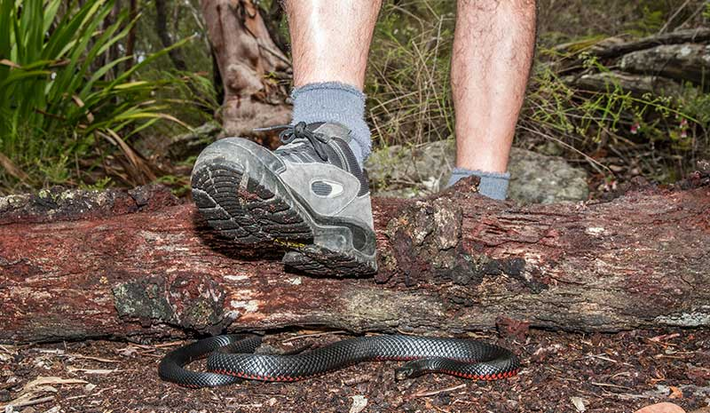

Good habits while hiking can save you from a trip to the hospital so make sure you are always prepared before you go on a hike! A simple but affective tool is a long stick! and dont forget to bring a first aid kit too!
Always be sure to carry a snake bite kit (Ouch Pouch) if hiking and be sure to call 911 if you think you are bit by a venomous snake!
